本文章將介紹如何在 VirtualBox 新增一台虛擬機器，使用版本為 VirtualBox 6.0.0，使用範本為 ubuntu 16.04
ubuntu 16.04 IOS 檔案下載網址：http://releases.ubuntu.com/16.04/
1. 點選新增來增加虛擬機器
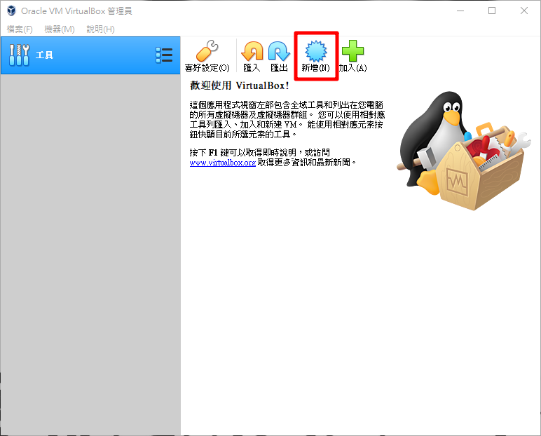
2. 名稱：命名，機器資料夾：預設是安裝 VirtualBox 時設定的預設機器資料夾可以再重新設定路徑，類型：選擇想要的系統，版本：選擇系統版本

3. 設定記憶體大小

4. 選擇立即建立虛擬硬碟為虛擬機建立一個虛擬硬碟，如果之前有建立好的虛擬硬碟可以選擇使用現有虛擬硬碟檔案掛上去
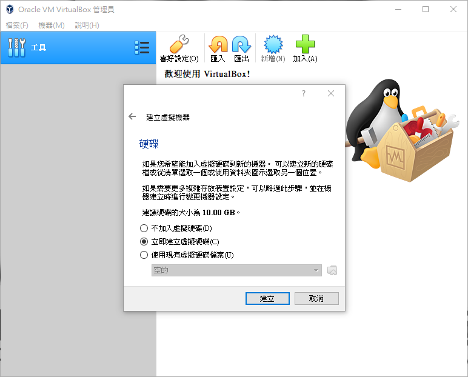
5. 如果選擇立即建立虛擬硬碟則需要繼續設定硬碟，選擇 VDI 如果有需要用在其他的虛擬化軟體的環境，可以選另外二個選項
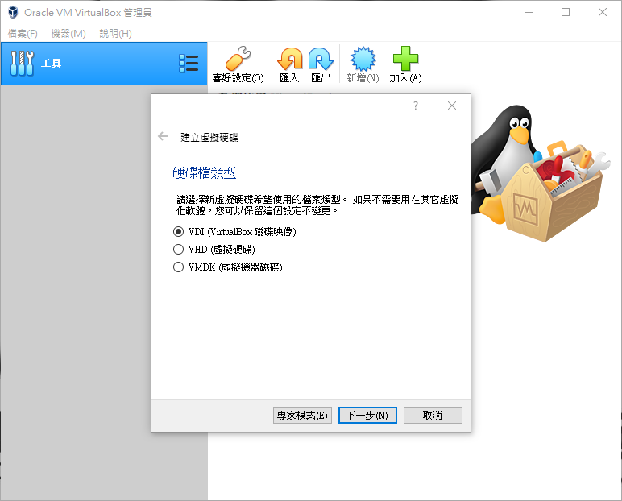
6. 在實體硬碟中存放介面中有說明，請依照個人需求選擇
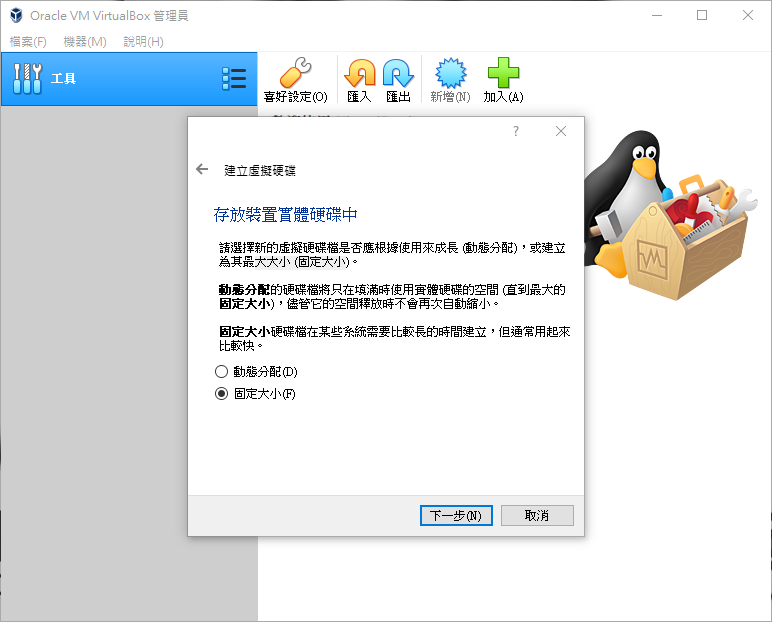
7. 設定硬碟位置和大小，路徑預設是在一開始所設定的機器資料夾底下，在幫你開一個機器名稱的資料夾
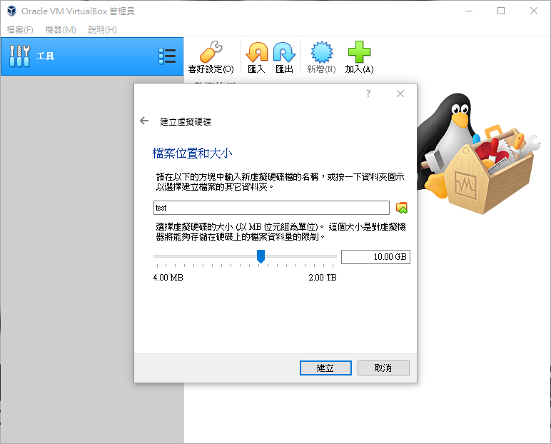
8. 如下圖設定完後跑一下讀條後就完成了
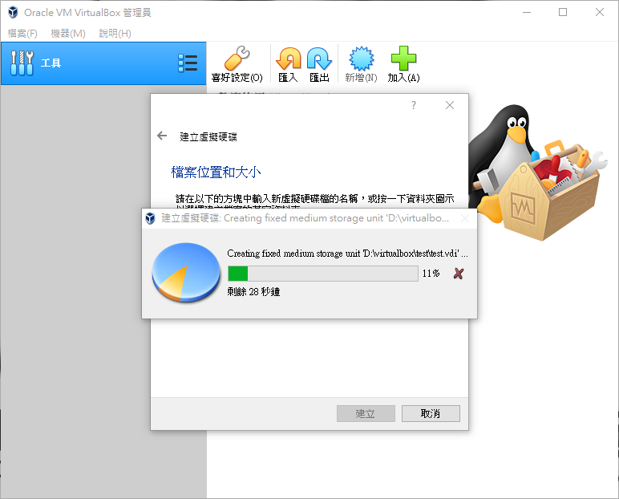
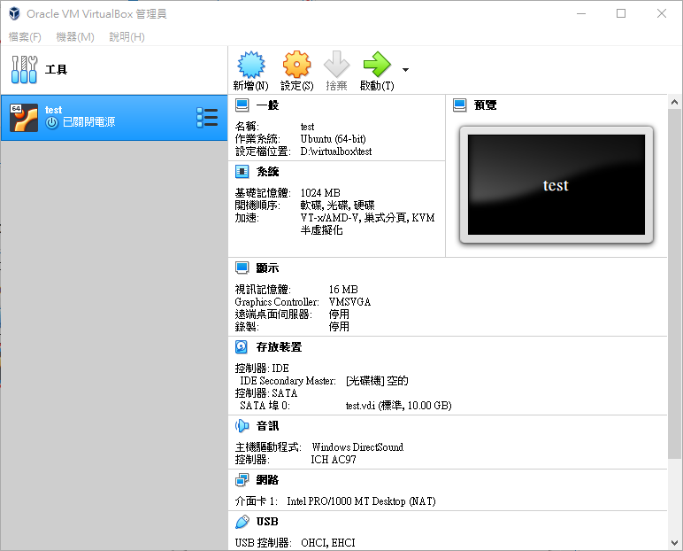
9. 在建好的機器列表上右鍵 → 設定可以再對機器進一步設定其他的選項
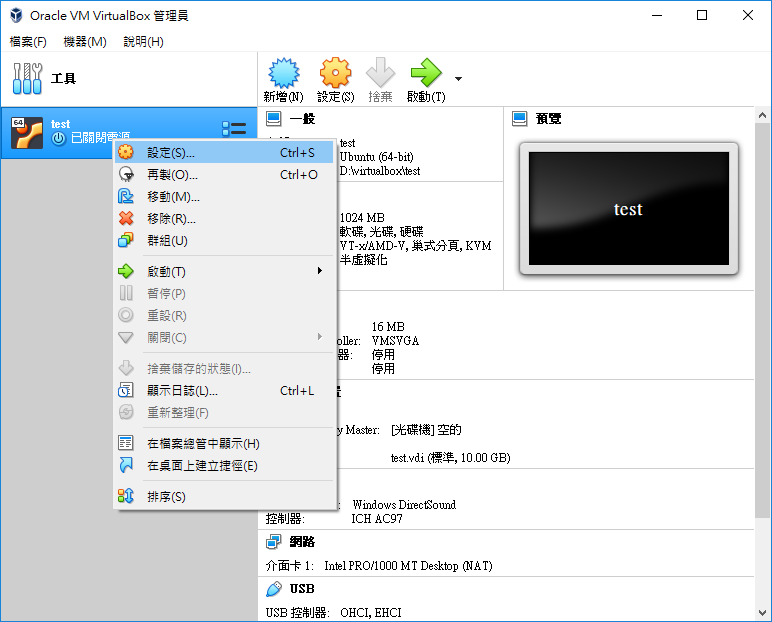
10. 在機器建好還沒有第一次啟動，你是可以在一般更改虛擬機器的類別和版本，當如果你已啟動虛擬機器後，就再也無法更改這些設定了
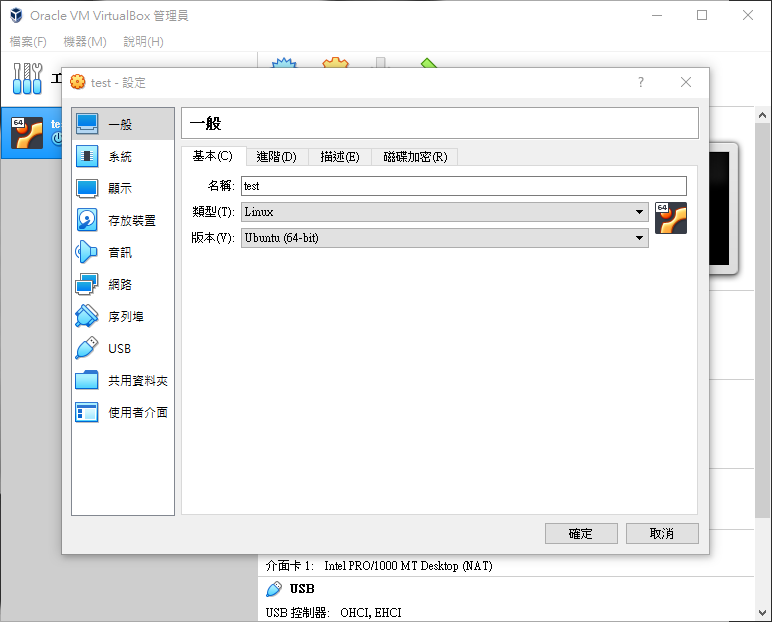
11. 在系統可以對記憶體跟 cpu 在次作設定
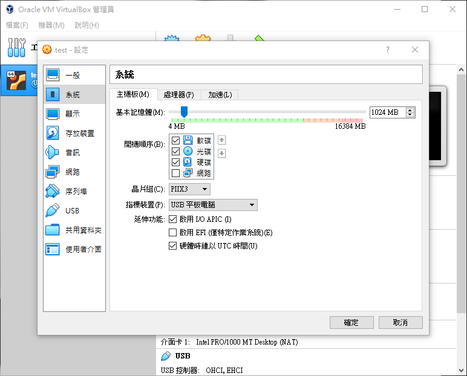
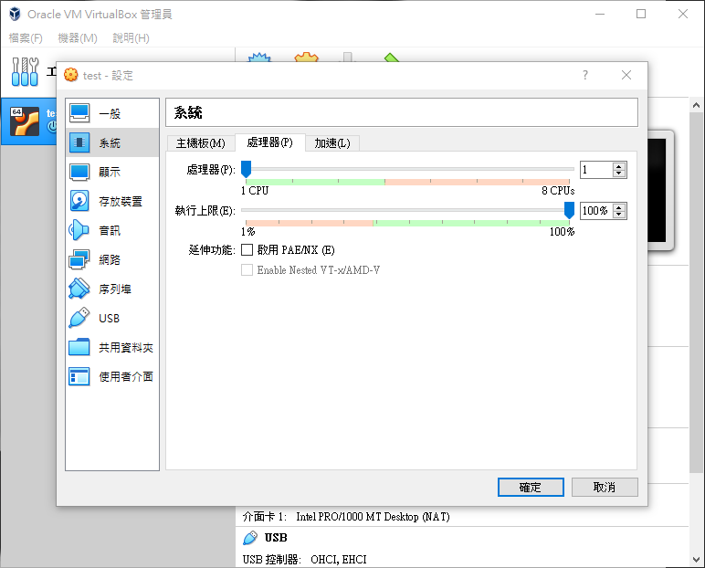
12. 在存放裝置設定作業系統，如圖控制器：IDE 下顯示空的點選後，右邊光碟機點及光碟圖示選擇想要的作業系統
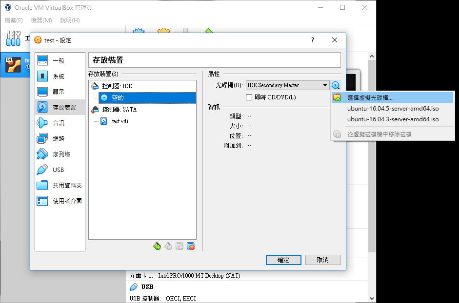
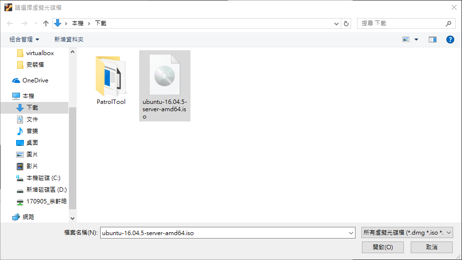
13. 選擇作業系統的另一種方式，在建好的機器列表上右鍵 → 啟動 → 標準啟動
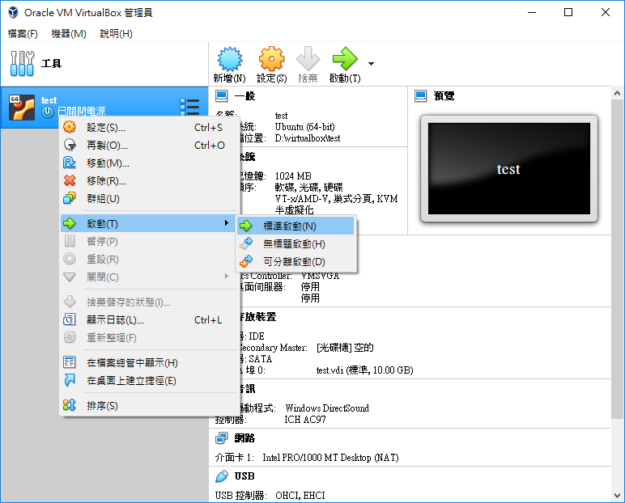
啟動後會問你作業系統點擊右邊資料夾圖案選擇想要的即可，上方訊息如果不想看到右上角關閉可以用滑鼠點掉
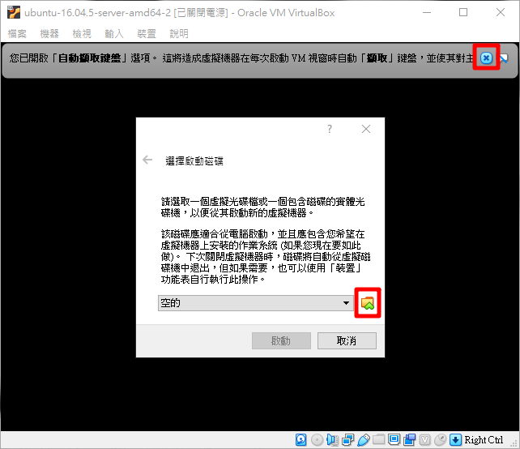
點即啟動開始安裝 ubuntu
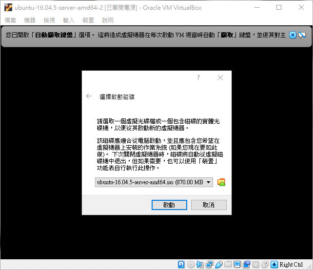
在來就會進入下圖安裝畫面，接下來就只能用鍵盤設定，安裝設定將會在下篇文章作介紹
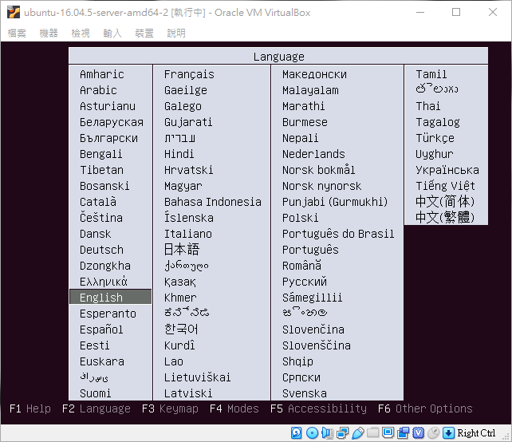